초반엔 쉬운거 같았지만 가면 갈수록 어려워지는 마성의 언어
다양한 분야에서 사용 가능하다는 이점을 가지고 있으며 초반 부분 학습난이도가 낮아 누구든 프로그래밍에 대한 흥미를 느낄 수 있게 해주는 프로그래밍 언어
습득난이도
★★☆☆☆
사용분야
데이터 분석, 자동화(매크로), 웹 프로그래밍(백엔드), 크롤링, 게임제작, 머신러닝
개발자의 한줄평
로드맵 - 제목을 누르면 유튜브로 이동됩니다.
1.파이썬 입문 및 기본 +) 1-2 생략
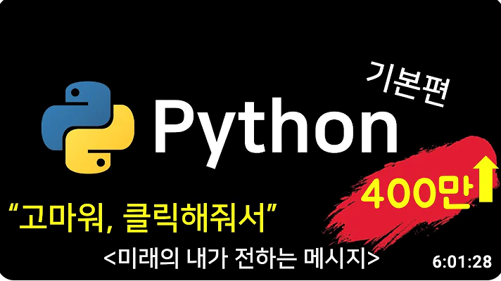
2.자동화
3. 게임 및 gui
4. pygame
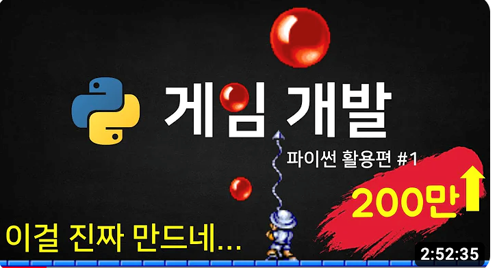
5.GUI
6. 자동화
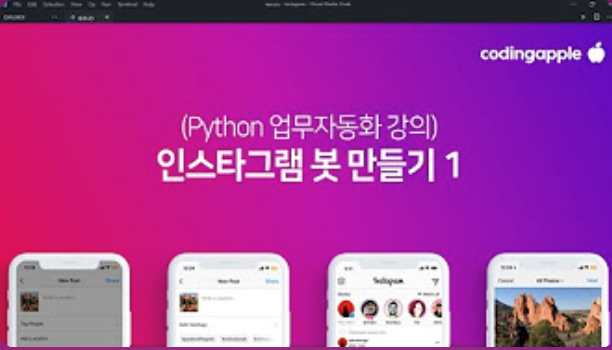
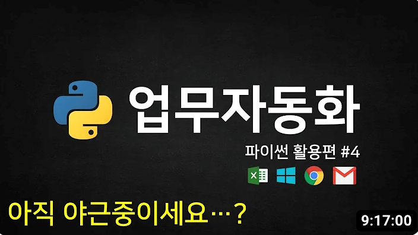
7. 데이터
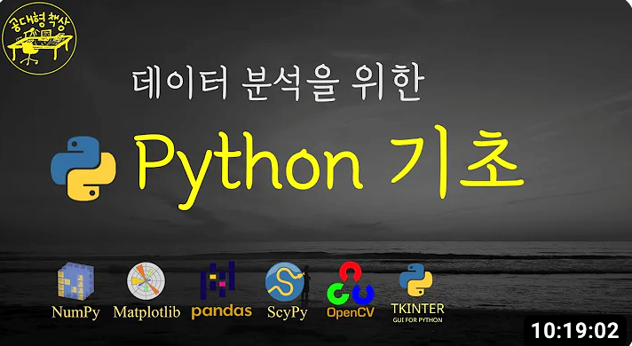
8. 백엔드
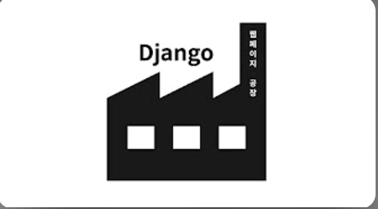
9. 머신러닝
개발환경세팅가이드
개발환경세팅가이드 바로가기
사용분야
데이터 분석, 자동화(매크로), 웹 프로그래밍(백엔드), 크롤링, 게임제작, 머신러닝
개발자의 한줄평
세상에 쉬운 언어는 없다
로드맵 - 제목을 누르면 유튜브로 이동됩니다.
1.파이썬 입문 및 기본 +) 1-2 생략
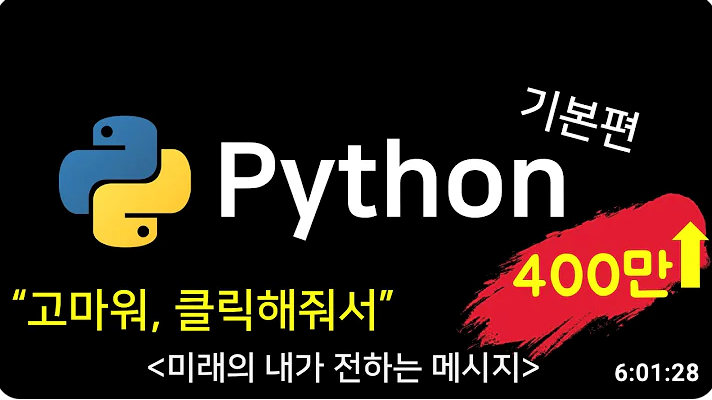
2.자동화
3. 게임 및 gui
4. pygame
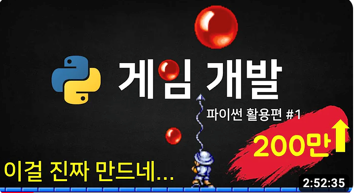
5.GUI
6. 자동화
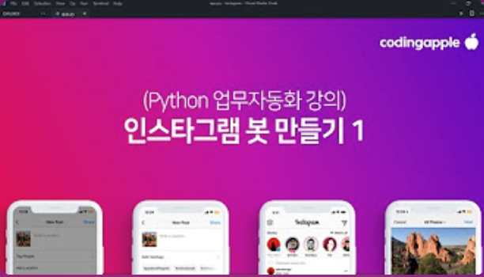
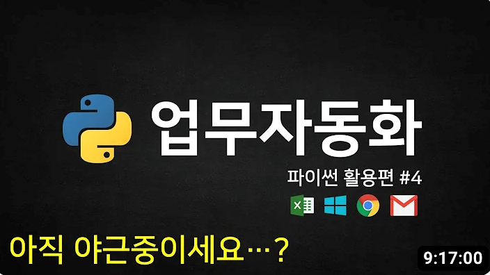
7. 데이터
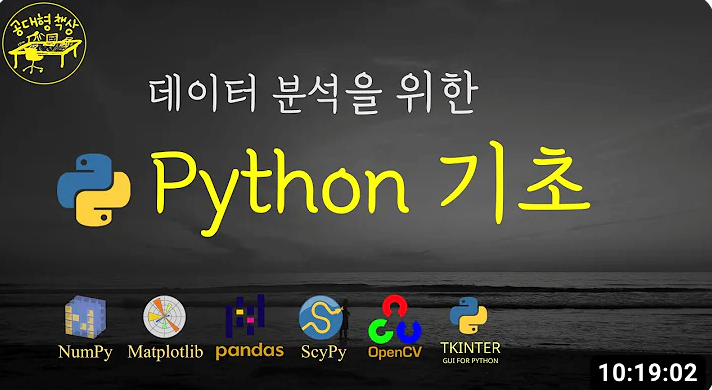
8. 백엔드
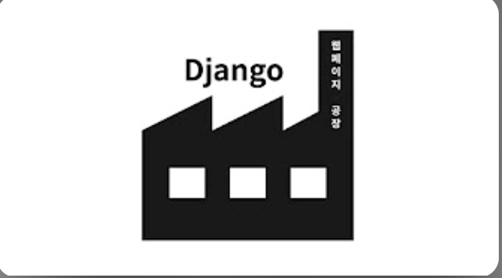
9. 머신러닝
개발환경세팅가이드
개발환경세팅가이드 바로가기